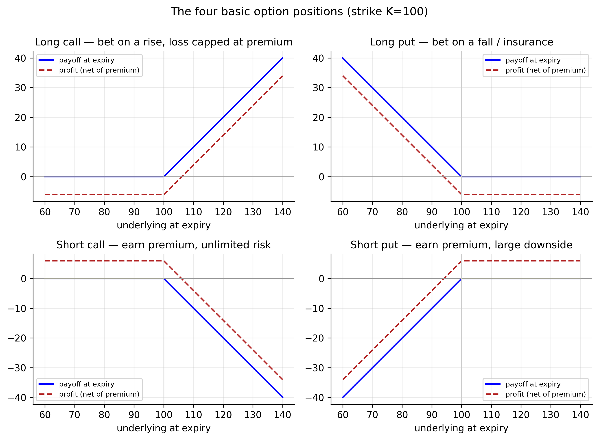
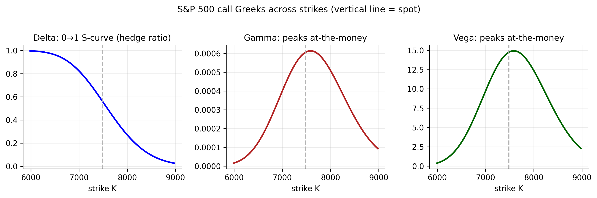

12 Options: Contracts, Payoffs, and the Greeks
Before we can price an option — the subject of the next chapter — we need to know what an option is and how it behaves. This chapter is a self-contained primer. It introduces the contract and its many variations, explains what an option is worth and why, shows how to read an option chain (with realistic chains for three of our tickers), and then works carefully through the Greeks — the sensitivities that are the daily language of options risk management — one at a time.
Live option prices come from the same data providers we could not reach when downloading the stock histories, so the chains shown here are computed with the Black–Scholes model (Chapter 13) from each ticker’s real spot price and its estimated volatility. The yfinance code below pulls real market chains on your own machine; drop those in and every number updates. The shapes and lessons are the same.
12.1 What is an option?
An option is a contract that gives its holder the right, but not the obligation, to trade an underlying asset at a fixed strike price \(K\) by a fixed expiry \(T\), in exchange for a price paid up front — the premium. There are two kinds:
- A call gives the right to buy at \(K\) (you want the price to rise).
- A put gives the right to sell at \(K\) (you want the price to fall).
Every option has two sides. The buyer (holder, “long”) pays the premium and owns the right; the seller (writer, “short”) receives the premium and takes on the obligation to deliver if the holder exercises. Combining the two contract types with the two sides gives the four basic positions — long call, long put, short call, short put — from which every options strategy is built.
12.2 Variations of options
Those four positions are the atoms. Real listed contracts then vary along several further dimensions, two of which change how an option is priced and how it behaves:
| Dimension | Variants |
|---|---|
| Type | call (right to buy) vs put (right to sell) |
| Exercise style | European (exercise only at expiry) vs American (any time up to expiry) |
| Side | long (holder, paid premium) vs short (writer, received premium) |
| Moneyness | in-the-money (ITM), at-the-money (ATM), out-of-the-money (OTM) |
| Maturity | short-dated, or long-dated LEAPS (a year or more) |
| Payoff | vanilla (standard call/put) vs exotic (barrier, Asian, lookback, …) |
Two of these matter most here. Exercise style: American options can be exercised early, which makes them (weakly) worth more and harder to price; European options can only be exercised at expiry, and the Black–Scholes formula prices European options. Most single-stock options are American, while many index options (including S&P 500 options) are European. Moneyness describes where the strike sits relative to the spot \(S\):
- A call is ITM if \(S > K\) (exercising it has positive value now), ATM if \(S \approx K\), and OTM if \(S < K\). For a put the inequalities reverse.
Moneyness drives almost everything about how an option behaves, as the Greeks below will show.
12.3 Payoffs and profit at expiry
With the contract and its variations in hand, we can ask what an option is actually worth. The cleanest place to start is the one moment when the answer is beyond dispute — expiry, where all the time left to move has run out and only the outcome remains.
At expiry the value of an option is unambiguous — its payoff. A call is worth whatever the holder gains by buying at \(K\) and selling at the market price \(S_T\); a put, the reverse:
\[ \text{call payoff} = \max(S_T - K,\ 0), \qquad \text{put payoff} = \max(K - S_T,\ 0). \tag{12.1}\]
The holder’s profit subtracts the premium paid; the writer’s profit is the mirror image (premium received, minus any payoff owed). Figure 12.1 draws all four positions.

The four positions have distinct risk profiles. A long call is a bullish bet with loss capped at the premium and unbounded upside. A long put profits when the price falls and is the classic way to insure a holding. A short call collects the premium but faces unlimited loss if the price soars. A short put collects the premium but is exposed to a large drop. These asymmetries are exactly what the Greeks quantify.
12.4 What an option is worth before expiry
Before expiry an option’s price splits into two parts:
\[ \text{option price} \;=\; \underbrace{\text{intrinsic value}}_{\text{payoff if exercised now}} \;+\; \underbrace{\text{time value}}_{\text{extra, for the chance of doing better}}. \tag{12.2}\]
The intrinsic value is what the option is worth exercised immediately — \(\max(S-K,0)\) for a call. The time value is the premium on top, reflecting the chance the option finishes deeper in the money before expiry; it is largest for ATM options and decays to zero as expiry approaches. Six inputs set the total: the spot \(S\), strike \(K\), time \(T\), interest rate \(r\), dividends, and — the crucial one — the volatility \(\sigma\). Higher volatility raises both calls and puts, because a wider range of outcomes makes the valuable tail more likely without hurting the capped side. That single fact is why the entire volatility-modelling half of this book feeds straight into option pricing.
12.5 Reading an option chain
Those six inputs fix the price of a single option. In practice a trader watches dozens at once — every strike for a given expiry, laid out side by side — and reads the patterns straight off the screen. That table is the option chain.
An option chain lists, for one expiry, every strike alongside its call and put prices (bid, ask, last), trading volume, open interest, and implied volatility. Downloading a real one is a few lines:
# install.packages("quantmod") # getOptionChain pulls a live chain
library(quantmod)
chain <- getOptionChain("AAPL", Exp = "2026-09-18") # nearest listed expiry
head(chain$calls); head(chain$puts) # strike, bid, ask, IV, OI...import yfinance as yf
tk = yf.Ticker("AAPL")
exp = tk.options[3] # pick an expiry date
chain = tk.option_chain(exp)
print(chain.calls[["strike","bid","ask","lastPrice","impliedVolatility","openInterest"]].head())Our model-built chain for the S&P 500 (spot \(7483\), \(\sigma = 17.4\%\), 3-month, \(r = 4\%\)) looks like this — and Apple and gold chains have the same shape:
| Strike | Moneyness | Call | Put | Δ (call) | Γ (per pt) | Vega (per 1% σ) | Θ (pts/day) |
|---|---|---|---|---|---|---|---|
| 6735 | ITM | 841.5 | 26.2 | 0.92 | 0.00024 | 5.8 | −1.21 |
| 7109 | ITM | 534.0 | 89.0 | 0.77 | 0.00046 | 11.3 | −1.65 |
| 7483 | ATM | 296.8 | 222.1 | 0.56 | 0.00061 | 14.7 | −1.83 |
| 7857 | OTM | 142.2 | 437.8 | 0.34 | 0.00057 | 13.8 | −1.58 |
| 8232 | OTM | 58.2 | 725.1 | 0.17 | 0.00040 | 9.6 | −1.05 |
Read down Table 12.2 and the structure is clear. Deep ITM calls (\(K=6735\)) are worth almost their intrinsic value (\(748\)) plus a little — they behave nearly like the stock (delta \(0.92\)). OTM calls (\(K=8232\)) are cheap lottery tickets (delta \(0.17\)). The ATM option in the middle carries the most time value and the largest Greeks — which brings us to the Greeks themselves.
12.6 The Greeks, line by line
The Greeks are an option’s sensitivities — how its price moves with the underlying (delta), with volatility (vega), with time (theta), and so on. Managing an options book is managing the Greeks.
The Greeks measure how an option’s price responds to a change in each input. Running an options book is managing the Greeks — you hedge each sensitivity you do not want. Figure 12.2 shows the three most important against the strike; we take them one at a time, with the S&P ATM call for concrete numbers.

12.6.1 Delta (Δ) — sensitivity to the underlying
\[ \Delta = \frac{\partial(\text{price})}{\partial S}, \qquad \Delta_{\text{call}} = N(d_1) \in [0,1], \qquad \Delta_{\text{put}} = \Delta_{\text{call}} - 1 . \tag{12.3}\]
Delta is the hedge ratio: it is how many shares move the option’s value one-for-one with the stock. The S&P ATM call has \(\Delta = 0.56\), so a trader who sells that call hedges it by buying \(0.56\) shares of the index per option — this is delta hedging, and it is exactly the portfolio that derives the Black–Scholes equation (Section 13.5). Delta also doubles as a rough probability of finishing in-the-money: deep-ITM calls have \(\Delta \to 1\) (they are the stock), deep-OTM calls \(\Delta \to 0\). Why it matters: delta is a position’s directional exposure; a “delta-neutral” book has no first-order bet on where the market goes.
12.6.2 Gamma (Γ) — how fast delta changes
\[ \Gamma = \frac{\partial \Delta}{\partial S} = \frac{\partial^2(\text{price})}{\partial S^2} = \frac{\phi(d_1)}{S\,\sigma\sqrt{T}} . \tag{12.4}\]
Gamma is the curvature — the rate at which delta itself moves as the underlying moves. It peaks at-the-money and near expiry (the S&P ATM call’s \(\Gamma = 0.00061\), largest in Table 12.2). Why it matters: a high-gamma position needs constant re-hedging — every move changes the delta, forcing the hedger to trade — and near expiry an ATM option’s delta can swing violently, making gamma the source of the trickiest risk in an options book. Long-gamma positions profit from big moves; short-gamma positions (option sellers) are hurt by them.
12.6.3 Vega (ν) — sensitivity to volatility
\[ \nu = \frac{\partial(\text{price})}{\partial \sigma} = S\,\phi(d_1)\sqrt{T} . \tag{12.5}\]
Vega measures exposure to volatility itself — how much the price moves when \(\sigma\) changes by one point. Like gamma it peaks at-the-money (the S&P ATM call gains \(\approx 14.7\) index points per \(1\%\) of volatility). Why it matters — and this is the bridge to the whole book: an option is, at its core, a bet on volatility, and vega is that exposure. Because \(\sigma\) is the one unobservable input to an option’s price, forecasting volatility is managing vega — every ARCH/GARCH/\(t\)-GARCH model we built is, in the options world, a tool for pricing and hedging vega.
12.6.4 Theta (Θ) — time decay
\[ \Theta = \frac{\partial(\text{price})}{\partial t} \;<\; 0 \quad(\text{for a long option}). \tag{12.6}\]
Theta is the bleed of time value: with each passing day, an option has less chance left to move in your favour, so a long option loses value even if nothing else changes (the S&P ATM call loses \(\approx 1.8\) points per day). Why it matters: theta is the rent you pay to hold optionality. Option buyers pay theta (time works against them); option sellers earn it (time is on their side). The theta–vega trade-off — you cannot collect time decay without being short volatility — is the central tension of most option strategies.
12.6.5 Rho (ρ) — sensitivity to interest rates
\[ \rho = \frac{\partial(\text{price})}{\partial r} . \tag{12.7}\]
Rho measures sensitivity to the risk-free rate (the S&P ATM call gains \(\approx 9.8\) points per \(1\%\) rise in rates; the put loses about the same). Why it matters: rho is usually the smallest Greek for short-dated options and often ignored, but it grows with maturity and matters for long-dated options (LEAPS) and in rate-sensitive markets.
| Greek | Sensitivity to | S&P ATM call | What it means, and why you hedge it |
|---|---|---|---|
| Delta (\(\Delta\)) | the underlying price \(S\) | \(0.56\) | the call moves about $0.56 per $1 the index moves — the hedge ratio and your directional exposure |
| Gamma (\(\Gamma\)) | delta itself | \(0.0006\) per point | how fast delta shifts (\(\approx 0.05\) per \(1\%\) index move); high gamma means costly re-hedging, and it is largest at-the-money |
| Vega (\(\nu\)) | volatility \(\sigma\) | \(14.7\) per vol-point | a \(+1\%\) rise in volatility adds \(\approx 15\) index points — the volatility bet, and the bridge to the GARCH models |
| Theta (\(\Theta\)) | the passage of time | \(-1.8\) per day | the option bleeds value each day; buyers pay it, sellers earn it |
| Rho (\(\rho\)) | the interest rate \(r\) | \(9.8\) per rate-point | a \(+1\%\) rise in rates adds \(\approx 10\) points; matters mainly for long-dated options |
12.7 Put–call parity
The Greeks describe how a single option responds to the world. One last relation describes how calls and puts respond to each other — and it needs no pricing model at all, only the absence of arbitrage.
Calls and puts are tied together by a no-arbitrage relation, put–call parity:
\[ C - P = S - K e^{-rT}. \tag{12.8}\]
A call minus a put (same strike and expiry) must equal the stock minus the discounted strike — otherwise a riskless profit exists. For our S&P options it holds exactly: \(296.8 - 222.1 = 74.7 = 7483 - 7483\,e^{-0.04\times0.25}\). Parity means that once you can price a call, the put comes for free, and it underlies much of how the two markets stay consistent.
12.8 Concept check
Decide first, then expand each answer.
Q1. The holder of a call option has:
- (a) the obligation to buy the underlying at \(K\).
- (b) the right, not the obligation, to buy the underlying at \(K\).
- (c) the right to sell at \(K\).
- (d) no position until expiry.
(b). A call is the right to buy at the strike; the buyer exercises only if it pays (\(S_T > K\)). The seller carries the obligation.
Q2. An option’s delta** of 0.56 means:**
- (a) the option costs $0.56.
- (b) the price moves about $0.56 per $1 move in the underlying, and you hedge with 0.56 shares per option.
- (c) it expires in 0.56 years.
- (d) its volatility is 56%.
(b). Delta is the hedge ratio and the price’s sensitivity to the underlying (also a rough probability of finishing in-the-money).
Q3. Which Greek is the direct link between option trading and the GARCH models of this book?
- (a) Rho — interest-rate sensitivity.
- (b) Theta — time decay.
- (c) Vega — sensitivity to volatility; since \(\sigma\) is the one unknown input, forecasting it is managing vega.
- (d) Delta — directional exposure.
(c). An option is a bet on volatility; vega is that exposure, and \(\sigma\) is what the volatility models forecast.
Q4. A long option position has negative theta. This means:
- (a) it gains value as time passes.
- (b) it loses value with each passing day, all else equal — the “rent” on holding optionality, which the option seller earns.
- (c) it has no time value.
- (d) its delta is negative.
(b). Time decay works against buyers and for sellers; theta is most negative for at-the-money options near expiry.
- An option is the right (not obligation) to buy (call) or sell (put) at a strike \(K\) by expiry \(T\), for a premium; the four building blocks are long/short call/put (Figure 12.1).
- Options vary by type, exercise style (European/American), moneyness, maturity, and payoff (Table 12.1); Black–Scholes prices European options.
- Price \(=\) intrinsic \(+\) time value (Equation 12.2); of the six inputs, volatility is the crucial (and only unobservable) one — higher \(\sigma\) raises calls and puts.
- The Greeks are the sensitivities you hedge: delta (underlying), gamma (curvature), vega (volatility), theta (time), rho (rates) — summarised in
- Vega is the bridge to the volatility models.
- Put–call parity (Equation 12.8) ties calls and puts together by no-arbitrage.